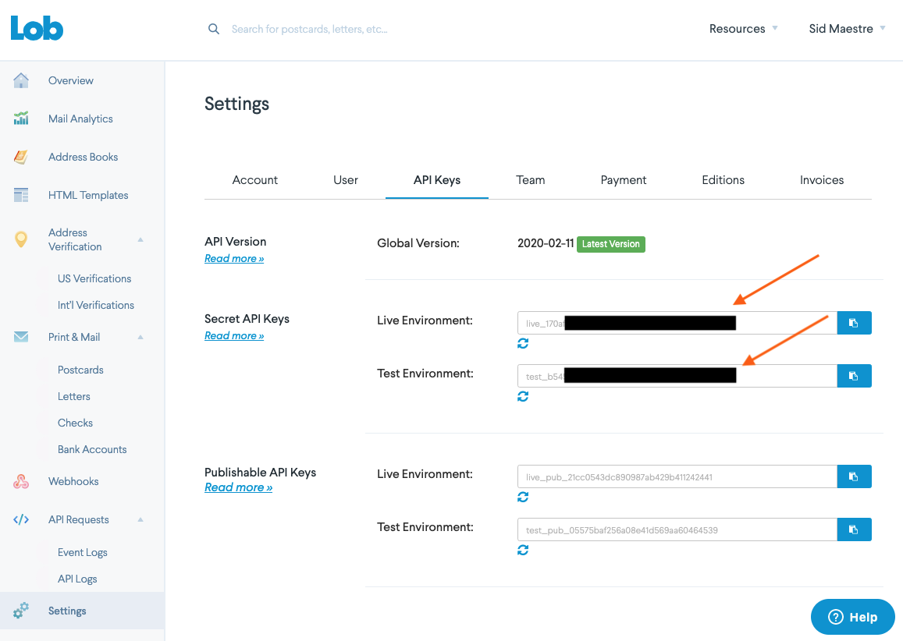
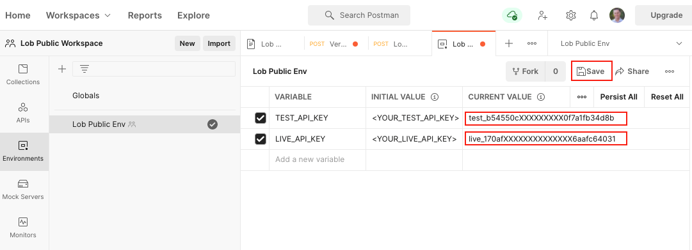

Let's make the world programmable.
Lob helps creators extend their applications into the physical world with automated direct mail and address verification APIs.
We've created a 10 min walkthrough showing how to get started with Lob API collections.
Prerequisites
- Sign up for a free Lob account
- Sign up for a free Postman account, and then sign in.
- Download and install the Postman desktop agent, which will enable you to use the web version of Postman
What You'll Learn
- Authorize the Lob API
- Start making API calls with Postman
What You'll Build
- A Postman Collection with authorized API requests
In order to use the collections in this public workspace, you'll select the Lob API collection and fork it into your personal workspace.
You'll also want to setup environment variables. A short cut is to fork Lob Public Env from Lob's public workspace. You also have the option to create them yourself.
Your API keys are located under Settings. You'll use the SECRET API KEYS that begin with test*. for your Test API key and live*. for your Live API key.

Set the Current Value for LIVE_API_KEY and TEST_API_KEY to your Lob "live" and "test" API keys and click Save.

Make sure Lob Public Env is selected in the environment menu.

Start exploring Lob's API collection.
The Test API key is used for all print & mail related endpoints while the Live API key is used for the address verification endpoint.
- For our full documentation visit
docs.lob.com - Need more help? Contact us at
support@lob.com